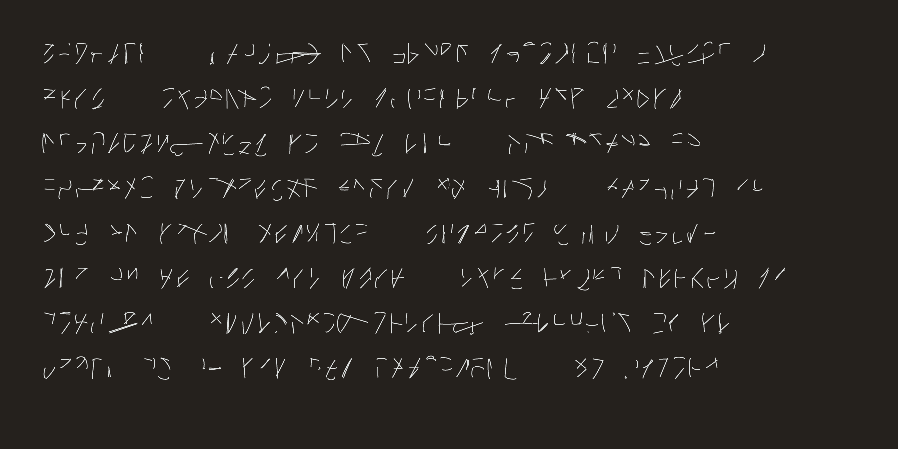
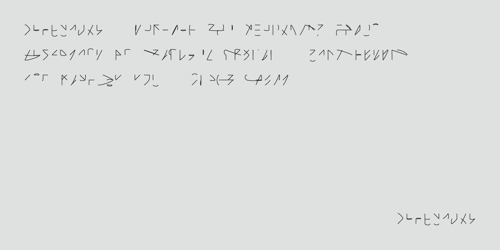
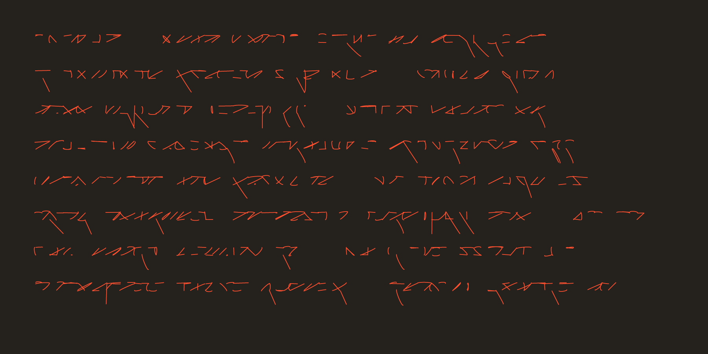

Procedurally-generated artworks (2017)
‘Asemic writing’ created with Processing and rendered with Adobe Illustrator. Related to the lines and runes plots made previously.



‘Asemic writing’ created with Processing and rendered with Adobe Illustrator. Related to the lines and runes plots made previously.


